Desktop App
-
1Navigate to https://outlook.office.com/mail/
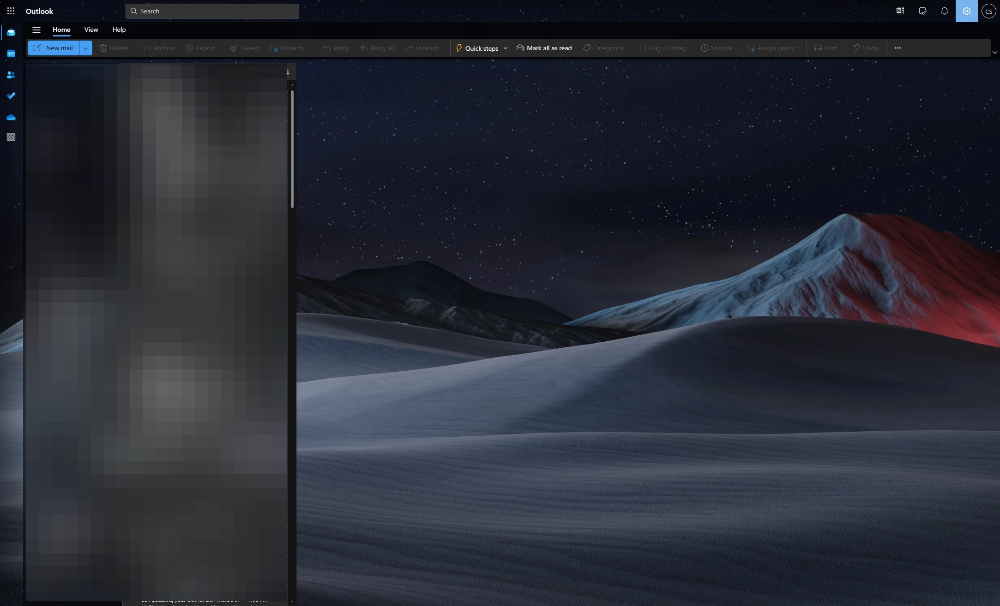
-
2Click here.
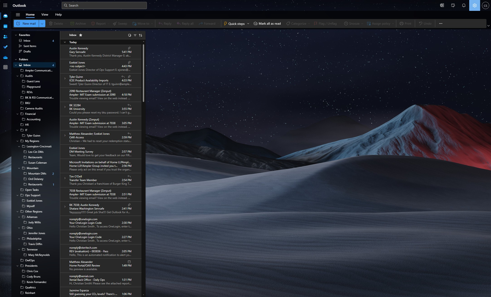
-
3Click "Account"
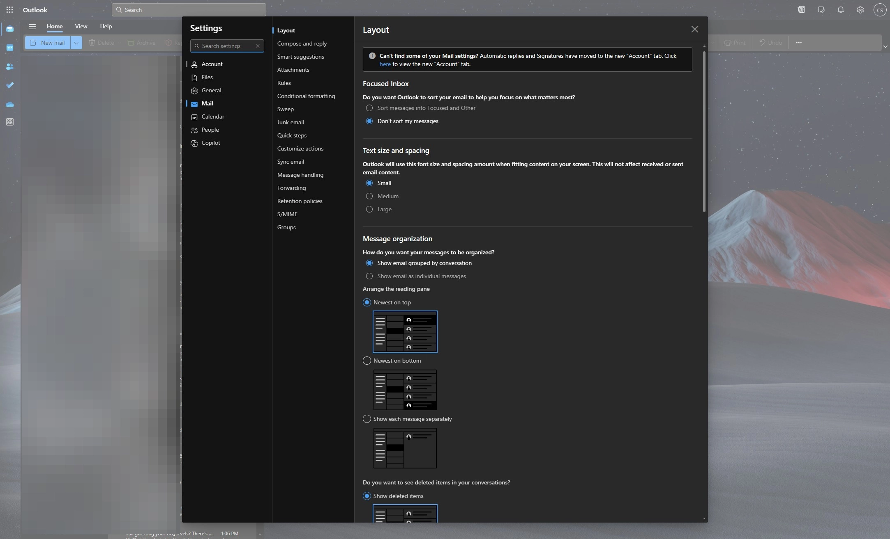
-
4Click "Signatures"
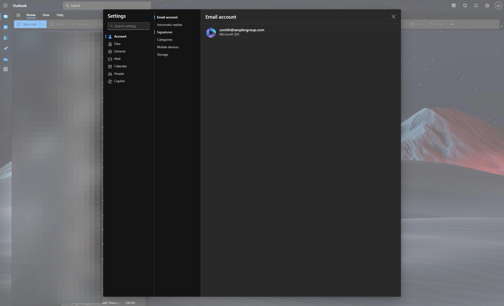
-
5Name signature.
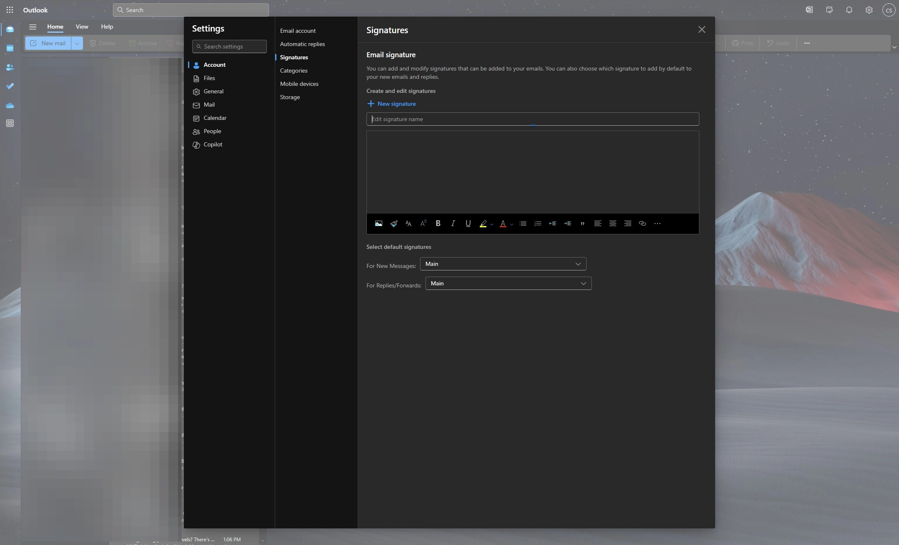
-
6Put in signature details.
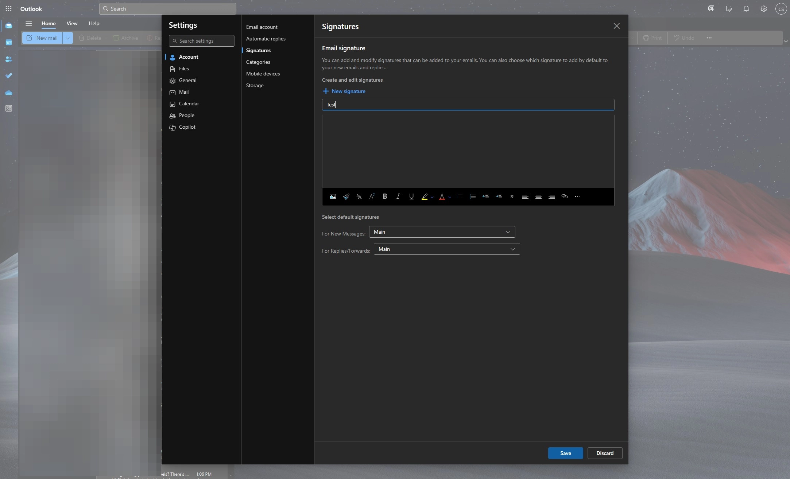
-
Tip
Make sure that your name and Ampler is colored Ampler Green. Hex #73A74D. R115, G167, B77.
-
7Select default signature "For New Messages"
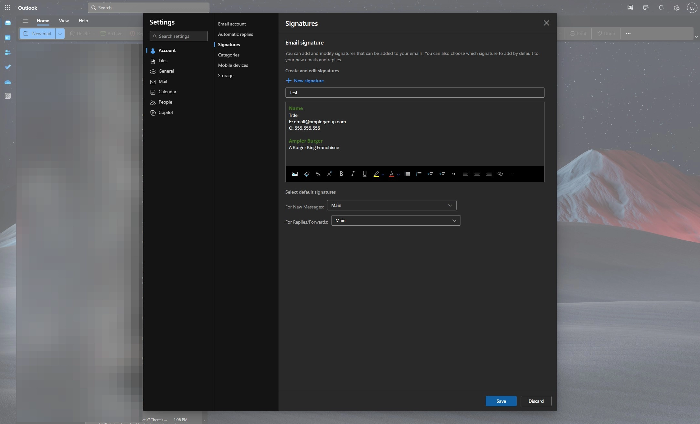
-
8Select default signature "For Replies/Forwards"
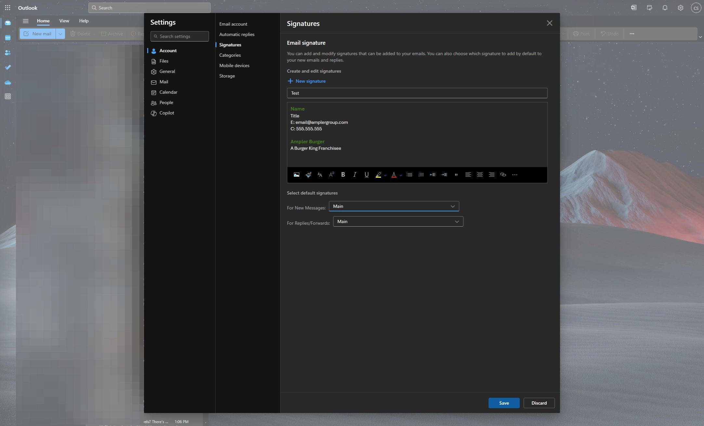
-
9Click "Save"
Outlook App
-
10Click Window icon
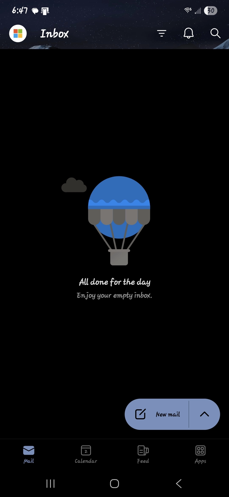
-
11Click Settings icon.

-
12Click "Signatures"
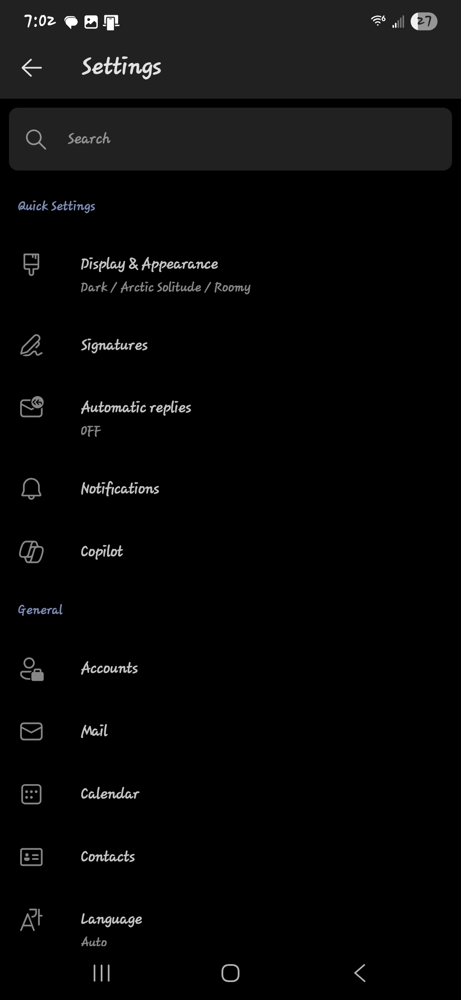
-
13Input your section.
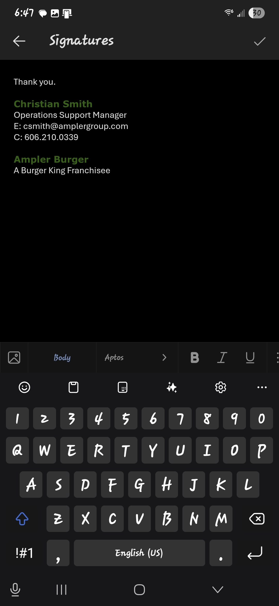
-
Tip
Depending on your device, you may have to copy your signature from a sent email and paste from clipboard to have it match properly.